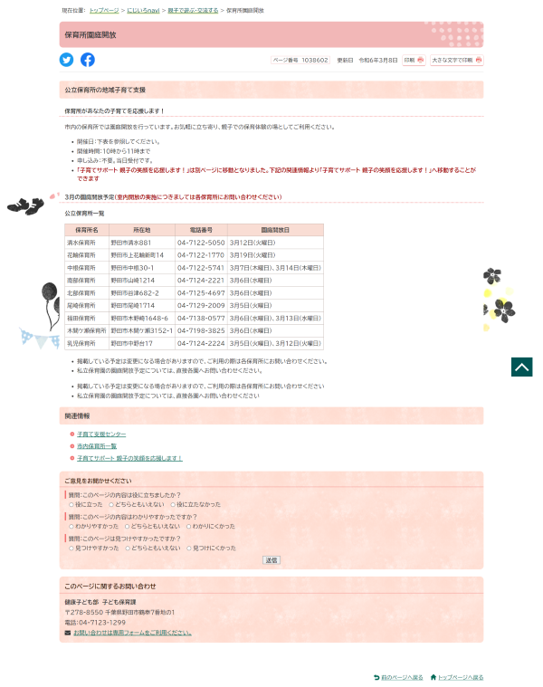

子育て支援特集ページ制作

- 
制作情報
制作期間
1か月
担当業務
テンプレートデザイン、コーディング
概要
CMSで作成する想定のページテンプレートデザイン、コーディングを行いました。
「子育て」のイメージから水彩調の柔らかい印象を重視し、温かさ、柔らかさをイメージしたペールピンクをメインカラーに配色を決めました。
特集ページのタイトルに「にじいろ」が含まれていたので、トップページのカルーセルボタンはカラフルな絵の具をイメージしたボタンデザインにし、お絵描き帳をモチーフにしてデザインを行いました。